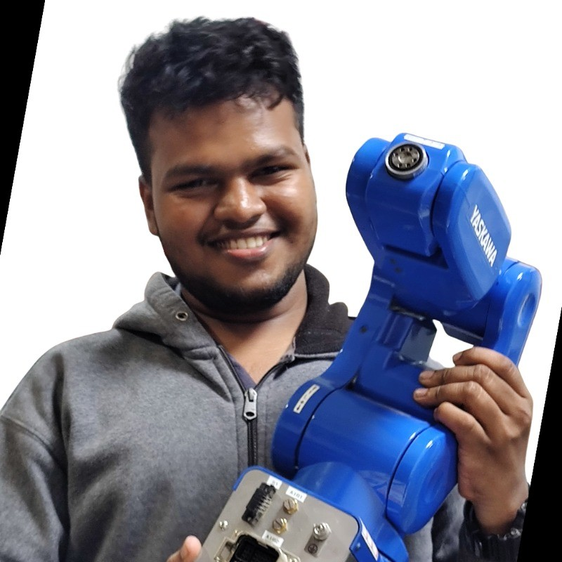
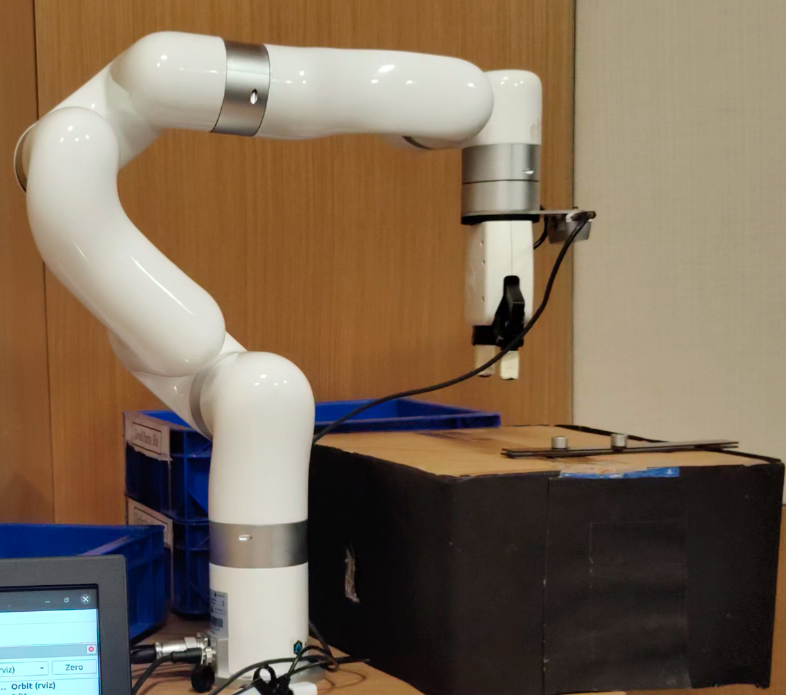
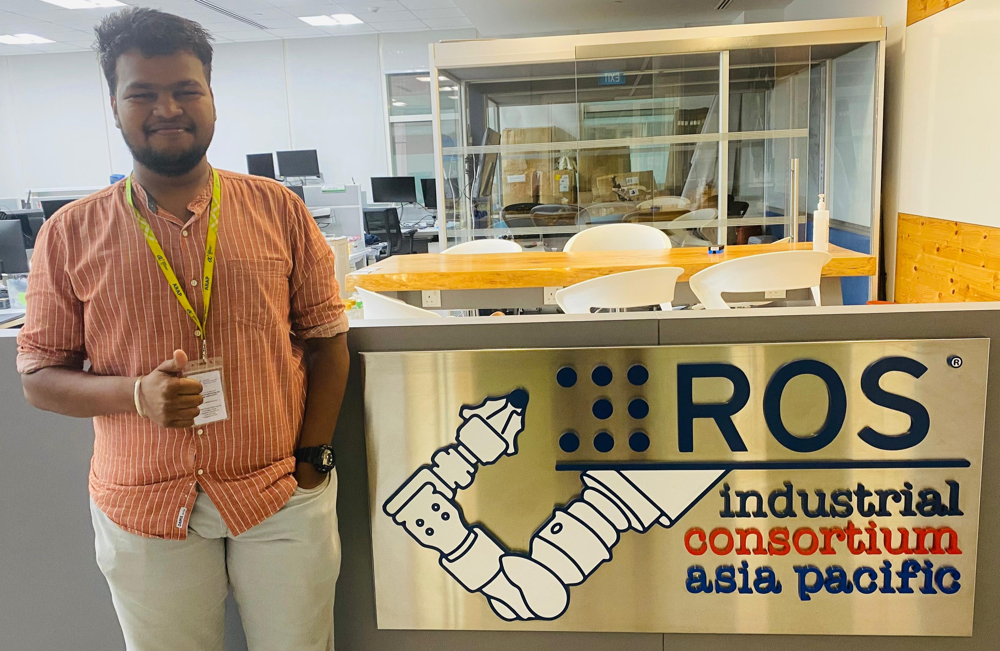
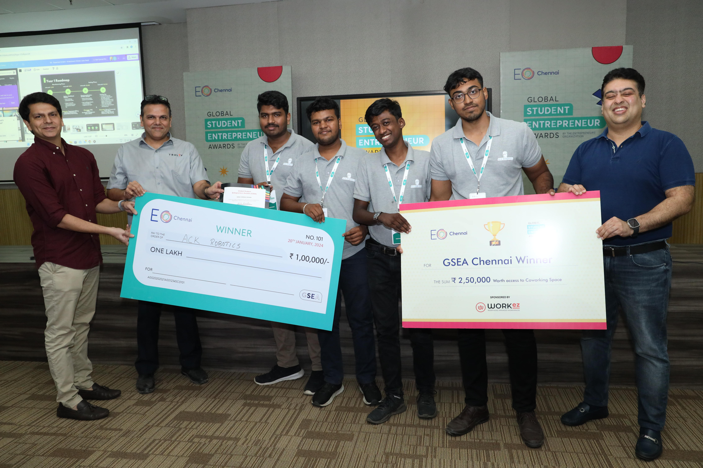
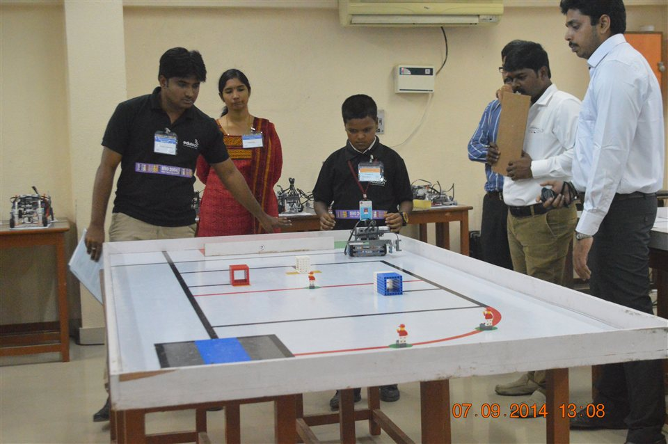

|
Kishore Paranthaman I am a Founding Robotics Engineer at Scout Robotics. I completed my graduate degree in robotics at Johns Hopkins University. Previously, I conducted research at the ROS-Industrial Consortium in Singapore for my undergraduate thesis through the Singapore International Pre-Graduate Award (SIPGA). I have also worked as a Robotics Software Intern at Mowito, the Robert Bosch Center for Cyber-Physical Systems at the Indian Institute of Science, and HCL Technologies. I completed my undergraduate degree in Electronics and Communication Engineering from Vellore Institute of Technology. |
 |

Research FocusI am interested in robotics, computer vision, reinforcement learning, deep learning, and learning-based control for robots. Most of my research focuses on perception for manipulators and mobile robots, motivated by the goal of delivering high-quality vision capabilities for robots. Here is information about my projects and internships, |
|
All / Publications / Projects / Professional Experience / Milestones and Awards |
Publications |
|
|
Framework for Quantitative Analysis of Robot Navigation Performance Under Rain Conditions
The paper presents a framework for evaluating the performance degradation of autonomous robots navigating under adverse rain conditions. It integrates task-specific and sensor-specific validators to assess how environmental factors like rain affect robot performance. By simulating different rain intensities and analyzing the performance of a 3D lidar-based mapping task, the framework helps predict and understand the impact of rain on robot autonomy. This aids in optimizing robot deployment in outdoor settings with varying weather conditions. Co-authored based on my undergraduate thesis, published at the IEEE ISIE 2024 Conference. Co-authors: Ramu, Ramesh, Paranthaman, Shalman, and Fern. |
|
|
Dual Mode PID Controller for Path Planning of Encoder-Less Mobile Robots in Warehouse Environment
The paper presents a Dual Mode PID Controller for path planning in warehouse environments, utilizing mobile robots without encoders. The proposed system, designed to enhance cost-efficiency and precision in navigation, integrates visual PID control with gyroscope correction for dynamic trajectory planning. This dual PID system allows for robust detection and successful traversal to designated spots, effectively reducing reliance on expensive encoders by utilizing an eagle-eye camera and an IMU sensor. The system's validation in a simulated environment demonstrates its potential to revolutionize navigation tasks within modern warehouse operations. Published in IEEE Access, vol. 12, pp. 21634-21646, 2024. Co-authors: R. Karthik, R. Menaka, P. Kishore, R. Aswin, and C. Vikram. |
|
|
Deep Learning-based 6D Pose Estimation of Texture-less Objects for Industrial Cobots
The paper introduces a deep learning-based method for 6D pose estimation of textureless objects, which is crucial for enabling industrial collaborative robots (cobots) to accurately identify and manipulate objects within industrial settings. This approach utilizes synthetic data generation for training, overcoming challenges associated with real-world data such as variability in lighting and occlusion. The synthetic data are created using domain randomization and advanced simulators to enhance realism and bridge the gap between virtual and real-world scenarios. This method not only improves the accuracy and efficiency of pose estimation in industrial automation but also reduces costs and complexities associated with data acquisition in diverse environments. Presented at the 2023 6th International Conference on Advances in Robotics (AIR ’23). Co-authors: Charan, Kishore, Aswin, Karthik, Menaka, Thillaivasan. |
Projects |
|
|
Hardware-in-the-Loop Telemetry Harness: Does GPU Inference Load Disturb a Robot Arm's Control Timing?
This project builds a soft real-time pipeline that connects a myCobot 280 arm to policy inference on an RTX 4070 (Triton and TensorRT) and measures the latency of every hop: simulation, UDP and Protobuf transport, inference, and USB serial actuation. Three policies run through the same serving path: a kinematic baseline, a pretrained ACT model and a pretrained Diffusion Policy. A safety filter and watchdog sit in front of the arm, and all seven injected faults were handled as designed on the hardware. On the real arm, the 15 Hz control tick held 66.67 ms at the 99th percentile under every GPU load, including Diffusion Policy running back to back at the GPU's power limit. CPU contention, not GPU load, was what moved the actuator's timing. The full report covers the method, the results for each phase, and the limits of the conclusion. |
|
Supervised Autonomous Robotic Renal Tumor Surgery (SARRTS)
Research at the Intelligent Medical Robotic Systems and Equipment Lab, Johns Hopkins University. I developed a collision-aware dual-arm manipulation framework on UR5 and UR10e robots for research into autonomous renal tumor resection in constrained surgical workspaces. Its online planning pipeline combines Pilz-generated motion plans with STOMP and CHOMP trajectory optimization to produce smooth, collision-free motions for both arms. For perception, I built a Zivid-based 3D pipeline that estimates tissue depth and registers the tumor rigidly using ICP, supporting image-guided robot targeting and planning. I also designed software interfaces for future integration with the dVRK/da Vinci surgical robotics platform. Watch the demo video. |
|
|
|
Enhancing Robotic Arm Grasping through Deep Reinforcement Learning: A Motion Planning Approach
This project investigates the application of deep reinforcement learning (DRL) to robotic arm grasping tasks, initially focusing on motion planning and subsequently extending to grasping actions. It evaluates various DRL algorithms, such as Soft Actor-Critic (SAC) and Proximal Policy Optimization (PPO), using a simulated UR5 robot model in a Mujoco environment. The findings highlight PPO as the most effective algorithm for stability, efficiency, and convergence. The project underscores the importance of reward shaping in training performance and outlines future enhancements, including improving real-world applicability and integrating sophisticated motion planning with grasping actions. This project provides a solid foundation for applying DRL to robotic arm tasks in industrial settings. |
|
|
Reinforcement Learning for Door Opening Using a Simulated Panda Arm with PyTorch and TD3 in Robosuite
This project explores the implementation of the Twin Delayed Deep Deterministic (TD3) policy gradient algorithm in PyTorch to train a simulated Panda robotic arm for the task of opening a door. Utilizing Robosuite as the simulation environment, the study aims to evaluate the efficiency and accuracy of the arm's movements in a controlled virtual setting. |
|
|
Mimicking Hand Gestures Using a Five-Finger Robotic Hand
Developed a customized MoveIt package by leveraging the Schunk SVH 5-finger arm description, incorporating 9 degrees of freedom (DOF) for enhanced flexibility and functionality. |
Professional Experience |

|
Chemistry Lab Assistive Robot
Conducted visual servoing using ROS MoveIt on KUKA LBR iiwa R820 using Intel Realsense D455 depth camera and resolved an algorithm to use a robotic arm to accomplish chemical experiments like humans. |
|
 |
3D Bin Picking Using xArm5
3D Bin Pick and Place based on 6D pose estimation. |
Milestones and Awards |
|
 |
Singapore International Pre-Graduate Award (SIPGA), A*STAR
Milestone: selected for the SIPGA by A*STAR to conduct my undergraduate thesis research at the ROS-Industrial Consortium Asia Pacific in Singapore (2024). The research led to the paper on robot navigation under rain conditions, published at IEEE ISIE 2024. |
|
 |
Global Student Entrepreneur Awards, EO Chennai
Position: Winner, with ACK Robotics (January 2024). Prize: a cash award of ₹1 lakh and ₹2.5 lakh worth of coworking space sponsored by Workez. The win advanced the team to the national semi-finals. Event hosted by the Entrepreneurs' Organization, Chennai chapter. |
|
|
World MoveIt Hackathon Day
Position: Global Winner. Prize: 6 DOF Robotic Arm. Competition conducted by Picknik Robotics. |
|
|
Flipkart Grid 5.0
Built a 5 DOF custom robotic arm with my team and was shortlisted as one of the top 10 teams in India. |

|
First Lego League
Award: Best Robot Performance Award in India (2015). |
|
 |
World Robot Olympiad
Milestone: where my journey in robotics began (2014). I competed with a LEGO robot at the World Robot Olympiad, my first robotics competition. |
|
This webpage is designed from the source code. provided by Jon Barron. |